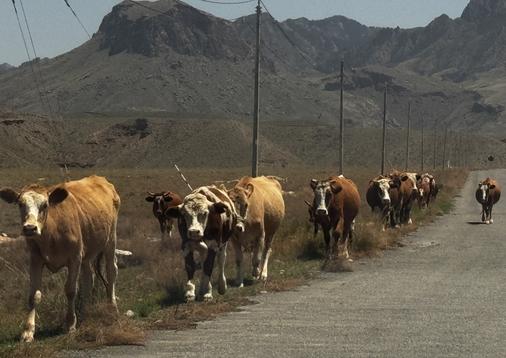
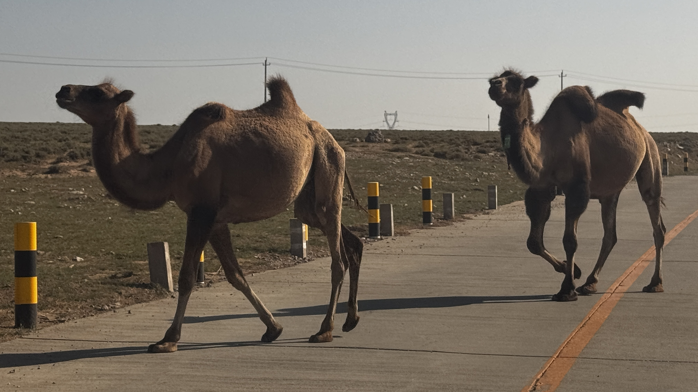
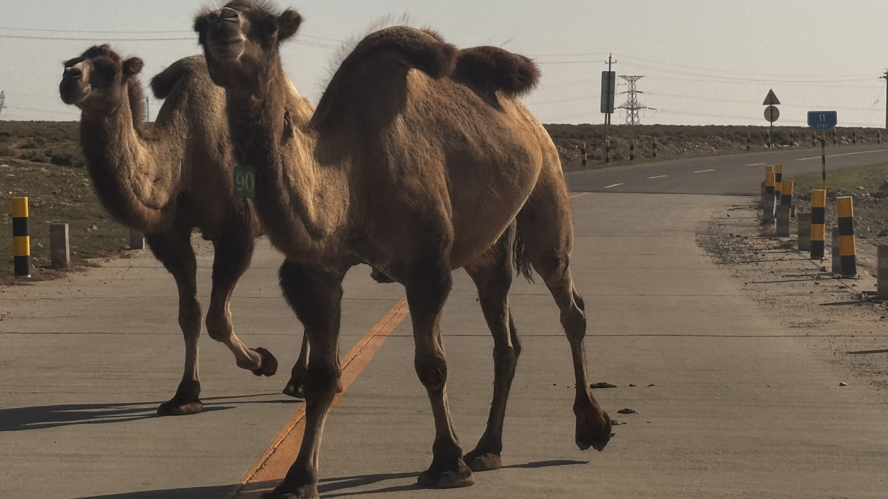
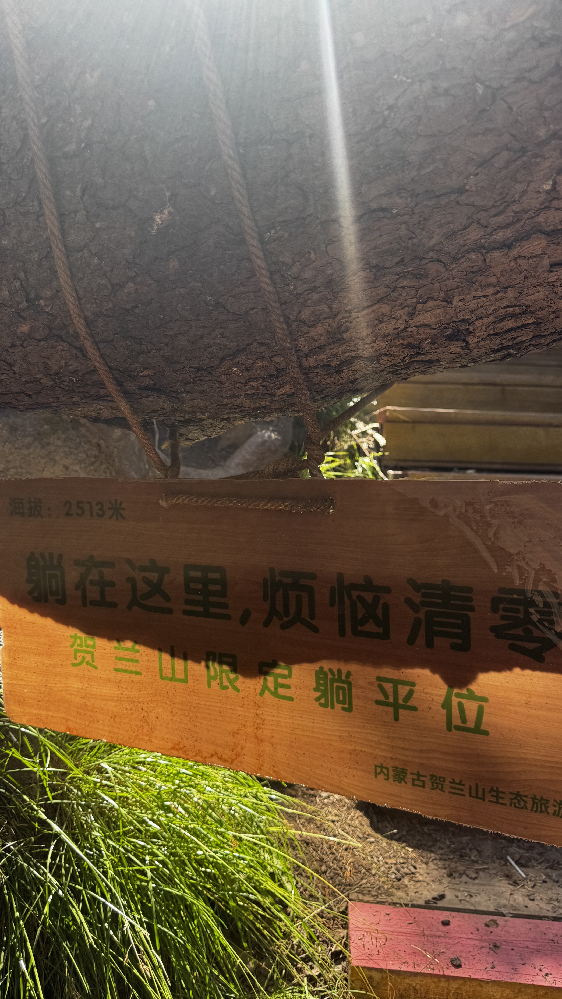

内蒙古 · 阿拉善
蒙古语"骏马"之意，中国西北重要山脉
内蒙古与宁夏的天然分界
贺兰山脚下，牛群在碎石路上悠闲漫步
贺兰山位于宁夏与内蒙古交界处，南北长220公里，东西宽20-40公里，平均海拔2000-3000米。主峰敖包圪垯海拔3556米，是宁夏最高峰。
贺兰山是中国季风区与非季风区的分界线，也是草原与荒漠、农业与牧业的过渡地带。山体东麓陡峭，西麓平缓，形成了独特的地理景观。
这里的生态系统脆弱而珍贵，生活着岩羊、马鹿、蓝马鸡等珍稀动物，以及贺兰山紫蘑、贺兰山黄芪等特有植物。

双峰骆驼穿越戈壁公路，逆光下的剪影
双峰骆驼是贺兰山地区的标志性动物，它们耐旱耐寒，能在极端环境下生存。在阿拉善戈壁，骆驼不仅是交通工具，更是牧民生活的重要组成部分。
每年秋季，牧民会赶着骆驼转场，形成壮观的迁徙队伍。骆驼的驼铃声声，回荡在戈壁滩上，是西北最具诗意的画面之一。

编号"90"的双峰骆驼，佩戴着牧民的标志
在贺兰山地区，每峰骆驼都有属于自己的编号和印记。这些编号不仅是所有权的标志，更是牧民与骆驼之间深厚情感的见证。
骆驼性格温顺，记忆力极强，能记住几十年前走过的路。在茫茫戈壁中，它们是牧民最可靠的向导和伙伴。

"躺在这里，烦恼清零"——贺兰山限定躺平位
在贺兰山海拔2513米处，有一块网红打卡牌："躺在这里，烦恼清零——贺兰山限定躺平位"。
这里视野开阔，可以俯瞰整个阿拉善戈壁。躺在草地上，仰望蓝天白云，远眺连绵山脉，所有的烦恼仿佛都被山风吹散。
近年来，贺兰山生态旅游逐渐兴起，越来越多的游客来到这里，感受大自然的治愈力量。
贺兰山岩画分布广泛，数量众多，题材丰富，包括动物、人物、符号等，是研究远古人类文化的重要资料。
岩画记录了从旧石器时代到铁器时代的人类活动，见证了贺兰山地区数千年的文明变迁。
1996年，贺兰山岩画被列为全国重点文物保护单位，2019年入选中国世界文化遗产预备名单。